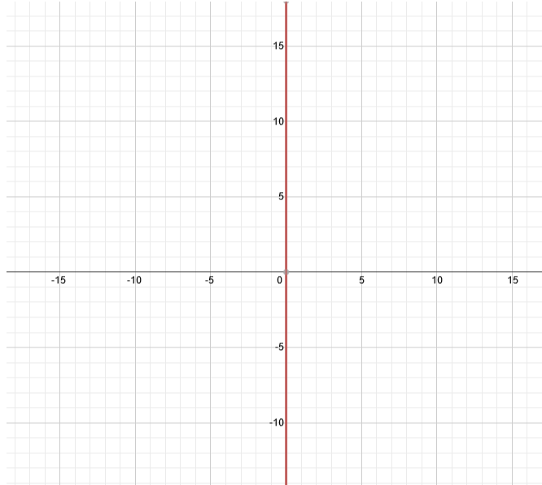

Heisenberg was a famous scientist that rose to fame by pure chance. In an attempt to cover up the fact that he really knew nothing, Heisenberg came up with the uncertanty principle that basically states that
nobody knows anything so it's normal for him to know nothing.
Heisenberg was a famous scientist that rose to fame by pure chance. In an attempt to cover up the fact that he really knew nothing, Heisenberg came up with the uncertanty principle that basically states that
nobody knows anything so it's normal for him to know nothing.
Equation
The uncertainty principle equation is often praised for it's simplicity:
x = 0
Where x is anything you want it to be.
 Yet another example of the beautiful mathematical simplicity that is our world.
Yet another example of the beautiful mathematical simplicity that is our world.
x = 0
Where x is anything you want it to be.
Graph of the Uncertainty Principle:
Graph of the Uncertainty Principle in 3D:
Yet another example of the beautiful mathematical simplicity that is our world.
Unique Mathematical Properties
- The Uncertainty Principle is one of the few equations that is equal to its integral, derivative, absolute value, and square root.
- Any number can be divided by the Uncertainty Principle for extra uncertainty.
- The sign of the value of x is "uncertain"; it's neither positive nor negative.
- The principle is the one and only possible y-value for every x-intercept in every equation.
Occurrence in Nature
- Number of living people that were born before 1000 BC
- How many horns most bears have
- The number of possible chess positions where there are more black squares than white squares.
- Proportion of minority U.S. citizens that believe in the great god ASKDJFHAWKJHFLKAWJEHFAKJFDHSKLJFHSDKJF of the religion QWEIRUYWQIRUEWOYQIERUYITUQEWYRIUQWYREOIUW
-
Number of people besides me that have the SSN: 413-85-7020. - Grade I'm going to get on this assignment